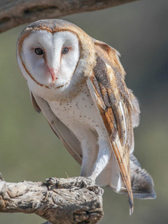
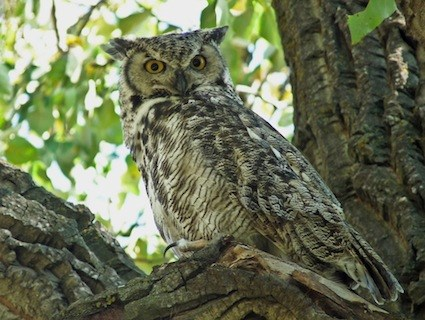

 The barn owl (Tyto alba) is the most widely distributed species of owl and one of the most widespread of all birds. It is also referred to as the common barn owl, to distinguish it from other species in its family, Tytonidae, which forms one of the two main lineages of living owls, the other being the typical owls (Strigidae). The barn owl is found almost everywhere in the world except polar and desert regions, Asia north of the Himalayas, most of Indonesia, and some Pacific islands.
 The American (North and South America) horned owls and the Old World eagle-owls make up the genus Bubo, at least as traditionally described. The genus name Bubo is Latin for the Eurasian eagle-owl. This genus, depending on definition, contains about one or two dozen species of typical owls (family Strigidae) and is found in many parts of the world. Some of the largest living Strigiformes are in Bubo. Traditionally, only owls with ear-tufts were included in this genus, but that is no longer the case.